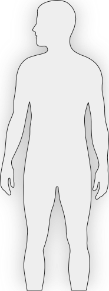
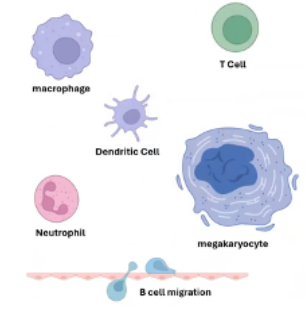
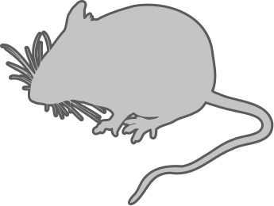

The immune system is a complex network of cells, tissues, organs, and the substances they make. These help the body fight infections and other
diseases.
When we age, our immune system function declines, so our bodies have a harder time fighting off infections, controlling malignancies, and maintaining
immune tolerance.

Central to this process is the emergence and expansion of senescent immune cells. These cells exhibit traits such as cell cycle arrest, p16 and p21
expression, DNA damage response (e.g., γH2AX), and the production of pro-inflammatory factors known as the senescence-associated secretory phenotype
(SASP).
Senescent immune cells do not just lose their protective functions. But they also actively promote chronic inflammation and tissue dysfunction, key
contributors to aging and age-related diseases, such as rheumatoid arthritis, neurodegenerative disease, cardiovascular disease, and cancer.
Rheumatoid arthritis
Neurodegenerative disease
Cardiovascular disease
Cancers
To develop effective treatments, researchers must better understand how the immune system ages. They also need to study how different types of immune
cells in different parts of the body become senescent.

However, the study of immune-cell senescence is made difficult by several challenges.
First, the immune “organ” is not limited to one area, organ, or tissue type. Instead, it is distributed throughout the body: Multiple tissues with
distinct structures and functions.
Brain
Lymph Nodes
Thymus
Heart
Liver
Spleen
Kidney
GI Tract
Bone Marrow
Second, there is no single “immune cell” with one particular function. Instead, there are many cell types with different structures and roles.

Different immune cell types exhibit different senescence patterns/features.

This is why research on immunosenescence needs to be pan-organ, analyzing many tissue types across various anatomical structures.
Since
location matters, an atlas of immunosenescence with spatial information is essential. Such an atlas can help us understand how immunosenescence varies
across the body and support the development of targeted treatments.
Let’s look at some examples of how researchers study immunosenescence. In these cases, mouse samples are used because mice share many biological and
genetic features with humans. Their small size and rapid aging makes research efficient and cost-effective.

Old (24 months)
Brain
Lymph Nodes
Thymus
Heart
Liver
Spleen
Kidney
GI Tract
Bone Marrow
With age, the shape of immune cells changes, and cells of the very same type look rather different. Rich cell-type populations become less numerous
and less organized, and their gene and protein expression values change.

Shape changes
Composition shifts
Organization loss
Gene/protein value changes
Changes in immunosenescent cell states differ across organs. Immune cells are everywhere, but primary immune organs (like lymph nodes, spleen, thymus)
have very different cell type populations than non-lymphoid tissues (such as adipose, brain, gut, heart, kidney, liver, lung, muscle, and reproductive
system)
Senescent cells release a complex array of senescence-associated secretory phenotype (SASP) factors that affect neighboring cells through paracrine
signaling. Precisely measuring how close these cells are to one another and how they interact is crucial to understanding their impact.
In sum, this work advances our collective understanding of the spatial and molecular architecture of immune aging, laying the foundation for
biomarkers and interventions to support healthy aging and resilience.
For more information, check out data presented here in SenNet Data Portal, explore the evolving Human Reference Atlas via the HRA Portal, or connect
with senescence experts via the SenNet Community Portal.
Acknowledgements (TBA)


 What Is An HRA?
What Is An HRA? Squiggy's Identity Crisis!
Squiggy's Identity Crisis! Something's NOT Registering!
Something's NOT Registering! Data Detangle
Data Detangle Know Your Body Buddies
Know Your Body Buddies Immunosenescence
Immunosenescence